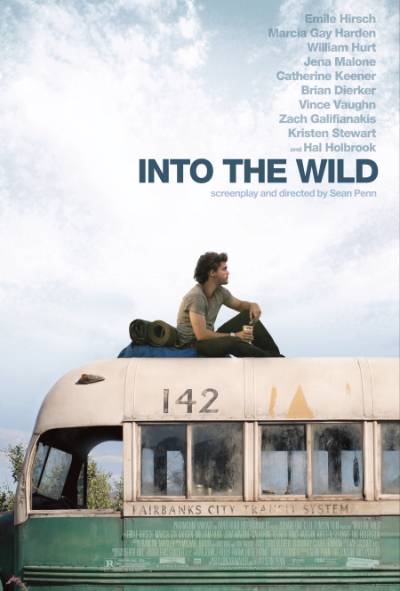

Iris Cedee
Programmer
Doortastende Allround technisch Beeldredacteur met ruime ervaring in media productie. Kennis van Search Engine Optimization (SEO), Fotografie, Microsoft Excel, Databases en Beeldbanken. Bachelor of Arts - Kunst, Architectuur, Natuur en Landschap, Food & Lifestyle.
 |
Le fabuleux destin d'Amélie Poulain Amélie is an innocent and naive girl in Paris with her own sense of justice. She decides to help those around her and, along the way, discovers love. |
|  |
Into the wild After graduating from Emory University, top student and athlete Christopher McCandless abandons his possessions, gives his entire $24,000 savings account to charity and hitchhikes to Alaska to live in the wilderness. |
The Red Turtle A man is shipwrecked on a deserted island and encounters a red turtle, which changes his life. |